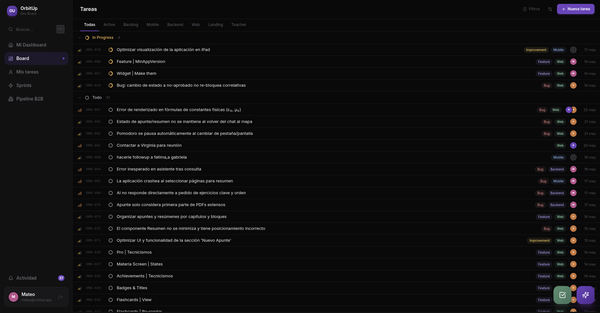

OrbitUp Ecosystem
18 Months Full-Cycle (2025–2026) · Co-founder & CTOAs the sole full-time developer and CTO, I architected, built, and operated the entire OrbitUp technical ecosystem from scratch. Over 1.5 years, I shipped across five distinct surfaces, deployed weekly updates with zero downtime, and scaled the platform to over 800 active university students during exam cycles.
Built and published the native mobile app on both the App Store and Google Play using React Native and Expo. Created the student web portal (React), a dedicated desktop application, and the marketing infrastructure.
Multi-tenant Node.js and Express backend on Railway with MongoDB. Designed JWT session rotation, connection pooling, and caching to withstand heavy concurrent traffic spikes during university exam weeks.
Designed a dedicated institutional portal for university professors to manage question banks and track class analytics. Built integrations with Google Classroom API and Moodle LMS.
Maintained an automated test suite of over 3,000 unit, integration, and regression tests in CI. Integrated LLM endpoints with deterministic JSON schema validation for adaptive student exam generation.


